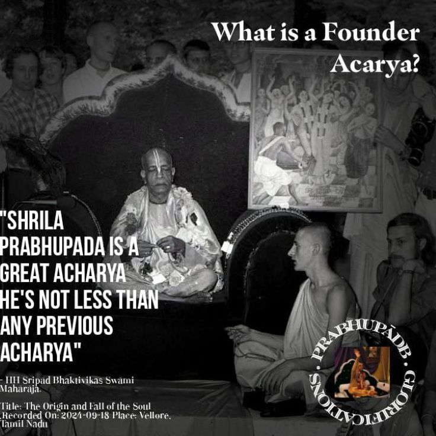

What is a Founder-Acārya?
Posted on : 27th May, 2025

The founder-ācārya is a śikṣā-guru of paramount importance; his role in the tradition of śikṣā is all-pervading in his line. This prominence is due to :
(1) the emphasis and direction he gives the paramparā’s teachings,⁴⁶ and
(2) the institution he establishes to fulfil Lord Caitanya’s mission.⁴⁷
Because of the indelible stamp the founder-ācārya places on the śikṣā of his line, all subsequent gurus and followers must execute their service and direct their dependents through the founder-ācārya’s teachings.⁴⁸ This is the pre-eminent śikṣā position of the founder-ācārya.
⁴⁶ See Harināma-cintāmaṇi, chapter 6, on “founder-ācārya.”⁴⁶ See Harināma-cintāmaṇi, chapter 6, on “founder-ācārya.”
⁴⁷ In a lecture, Śrīla Prabhupāda says, “That was Bhaktisiddhānta Sarasvatī Ṭhākura’s first attempt. Before that, even the ācāryas, Rūpānuga Gosvāmīs, they left literature, but they did not attempt to preach practically. And Bhaktisiddhānta Sarasvatī Ṭhākura, he was very, very anxious to preach this Caitanya cult in the western countries. This is Śrī Bhaktisiddhānta Sarasvatī Ṭhākura’s special contribution.” (Lecture, Los Angeles, December 13, 1973)
⁴⁸ One of the many times Prabhupāda repeated this principle: “This is paramparā system. You cannot jump over. You must go through the paramparā system.” (Cc. lecture, Māyāpur, March 28, 1975)
~ HH Sivrāma Swāmi, Book : Siksa outside ISKCON?